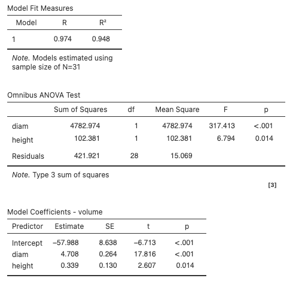
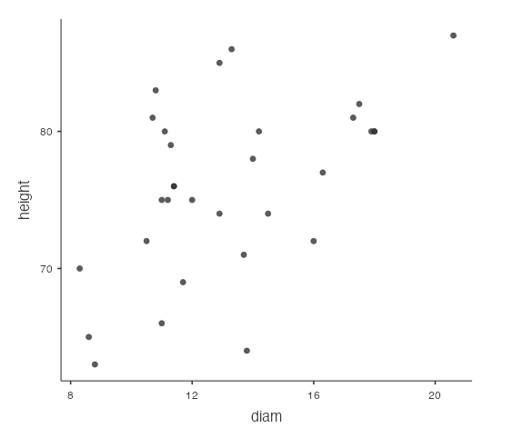

4.5 Multiple Linear Regression
In the previous chapter, we used a single explanatory variable to predict the value of our response variable using simple linear regression. In this chapter, we extend the linear regression framework to include multiple explanatory variables. First, we connect the ideas of linear regression and ANOVA. Then, using the ANOVA for regression framework, we add additional explanatory variables into a regression model and can make decisions on which model best explains the response variable.
Key Concepts
- Use ANOVA to test the effectiveness of a simple linear model
- Compute and interpret the value of \(R^2\) for a simple linear model using values in the ANOVA table.
- Find the standard deviation of the error term for a simple linear model
- Find the standard error of the slope for a simple linear model
- Use computer output to make predictions and interpret coefficients using a multiple regression model
- Use ANOVA to test the overall effectiveness of a multiple regression model
- Test the effectiveness of individual terms in a multiple regression model
- Compute and interpret the value of \(R^2\) for a multiple regression model
Anova for Regression
Variability in the response variable can be partitioned into two components:
- \(SS_{\text{Regression}}\)
- \(SS_{\text{Error}}\)
When conducting a simple linear regression using the computer, often times, an ANOVA table is included in the output. The Sum of Squares column of the ANOVA table gives us a way to partition the variability of our response into two components, variability we can explain with our regression model, and variability that is unexplained. In the context of regression, this looks like
\[ SS_{\text{Total}} = SS_{\text{Regression}} + SS_{\text{Error}} \]
The \(F\)-statistic
Another approach to determining if the linear model is effective (beyond the tests from the previous chapter) is to use the ANOVA table for regression, which includes an \(F\) test statistic. Recall that the \(F\)-distribution has two degrees of freedom. The numerator df for a regression model equals the number of explanaotory, \(x\), variables in the model. For simple linear regression with one \(x\), this is 1. The denominator df is \(n - 1 - df_{\text{numerator}}\), so for simple linear regression this is \(n - 2\). Note that you can have multiple explanatory variables as predictors for a response variable and this topic will be discuss later in this chapter. If we take the sums of squares divided by the respective degrees of freedom, we get the mean squares (MS) and the F test statistic is
\[ F = \frac{MS_{\text{Regression}}}{MS_{\text{Error}}} \]
The \(F\) test will allow us to test the hypotheses of
\[ \begin{aligned} H_0{:} & \hspace{.5em} \text{The model is ineffective} \\ H_A{:} & \hspace{.5em} \text{The model is effective} \end{aligned} \]
Understanding the definition of \(R^2\) through ANOVA
In the previous chapter, the coefficient of determination, \(R^2\), could be found by squaring the correlation coefficient, \(r\) (if considering a simple linear model). It can also be computed as
\[ R^2 = \frac{SS_{\text{Regression}}}{SS_{\text{Total}}}\]
This is the reason \(R^2\) is interpreted as the proportion of variability in our response that is explained by the model
Class Example 4.5.1: Elmhurst College
Elmhurst College conducted a study on the amount of gift aid given to students based on their family income (The Chronicles of Higher Education, 2012). 50 incoming freshman were randomly sampled and the amount of aid they were given along with their family’s income were collected, both in thousands of dollars. A partially completed ANOVA table and other regression output are given below.
| Source | df | SS | MS | F | \(p\)-value |
|---|---|---|---|---|---|
| Regression | 363.16 | ||||
| Error | 1097.92 | ||||
| Total |
| Coefficients | Estimate | Std. Error | \(t\) | \(p\)-value (2-sided) |
|---|---|---|---|---|
| (Intercept) | 24.32 | 1.291 | 18.831 | <0.0001 |
| Income | -0.043 | 0.011 | -3.985 | 0.0002 |
- Complete the partial ANOVA table and use it to calculate \(R^2\) and provide an interpretation in the context of the study.
- Conduct an \(F\) test to determine if the linear model fit is appropriate.
- How does the \(F\) test statistic relate to the \(t\) test statistic provided in the output?
Standard deviation of the error
In the previous chapter, we had to use the standard error of the slope to do inference for \(\beta_1\). This quantity can be obtained using the ANOVA regression table. The error sums of squares from the table, \(SSE\), is the sum of the squared residuals \(\sum(y - \widehat{y})^2\). WE can get what is called the standard devation of the error as
\[ s_{\varepsilon} = \sqrt{\frac{SSE}{n-2}} = \sqrt{MSE}\]
Then the standard error of the slope can be calculated as follows, where \(s_x\) is the standard deviation of the \(x\)-value.
\[ SE_{b_1} = \frac{s_{\varepsilon}}{s_x\sqrt{n-1}}\]
Note that when data values are more scattered about the regression line, our residuals are larger. This produced a larges \(SSE\), which means a larger \(s_{\varepsilon}\). This in turn gives a larger \(SE_{b_1}\) which will produce wider CIs and a smaller test statistic (large \(p\)-values) when doing inference on the population slope.
Class Example 4.5.2: Elmhurst College, continued
Calculate the standard error of the slope using the formula above and verify it matches what is in the output. Note that \(s_x = 63.21\).
Multiple Regression Model
In the previous chapter, we were using a simple linear regerssion model. This meant we fit a line to the sample, yielding \(\widehat{y} = b_0 + b_1 x\), and this estimated the true population line of \(y = \beta_0 + \beta_1 x + \varepsilon\). However, there are many data sets with several quantitative variables that may serve as predictors for a response. In this case we use multiple regression. If we have \(k\) predictors, the multiple regression model looks like
\[ y = \beta_0 + \beta_1 x_1 + \beta_2 x_2 + \cdots + \beta_k x_k + \varepsilon\]
which is estimated by
\[ \widehat{y} = b_0 + b_1 x_1 + b_2 x_2 + \cdots + b_k x_k. \]
Note that this model still suggests a linear relationship between each \(x\) and the response. Therefore, we should look at plots of \(y\) against each \(x\) variable separately to make sure a linear trend is valid. Many of the topics we saw for the simple linear regression case like the \(F\) test, \(t\) tests for slop, and \(R^2\) can also be used to investigate the adequacy of a multiple regression model.
ANOVA for Multiple Regression
Just as we saw earlier, we can divide the total variability into the part that is explained by the fitted model and the predictors (\(SS_{\text{Regression}}\)), and the part that is not explained (\(SS_{\text{Error}}\)).
\[ SS_{\text{Total}} = SS_{\text{Regression}} + SS_{\text{Error}} \]
WE can divide the sums of squares by their degrees of freedom to get the mean squares, and then get an \(F\) statistic as
\[ F = \frac{MS_{\text{Regression}}}{MS_{\text{Error}}} \]
What are the degrees of freedom? As earlier mentioned, the numerator df for a regression model equals the number of \(x\) variables in the model, denoted as \(k\). The denominator df is \(n - k - 1\). When we use this overall \(F\) test we are testing the following hypotheses
\[ \begin{aligned} H_0{:} & \hspace{.5em} \beta_1 = \beta_2 = \cdots = \beta_k = 0\\ H_A{:} & \hspace{.5em} \text{At least one} \beta_i \neq 0 \end{aligned} \]
Notice that the null says all “slope” parameters are 0. In this case they drop out of the model meaning that their corresponding xvalues were not useful predictors of \(y\). The alternative hypothesis just states that at least one of the predictors is useful, but does not indicate which ones. If \(H_0\) is rejected in favor of $H_A, we can later try to determine which predictors are useful through individual \(t\) tests.
Coefficient of Determination, \(R^2\)
As before, we can find the coefficient of determination as
\[ R^2 = \frac{SS_{\text{Regression}}}{SS_{\text{Total}}}\]
and interpret this as the percent of variability in \(y\) that can be explained by the fitted regression model. Note that you can compute the correlation, \(r\), between \(y\) and each \(x_i\) separately, but that it cannot be used to explain the entire model as a whole.
Interpreting coefficients in multiple regression
The way we interpret the intercept and slopes in a multiple regression model is very similar to what we saw for the simple linear regression model in the previous chapter. We just need to make slight adjustments to account for the fact that we now have more than one \(x\).
For the regression model \(\widehat{y} = b_0 + b_1 x_1 + b_2 x_2 + \cdots + b_k x_k\),
The slopes \(b_i (i = 1, 2, \dots, k)\) represents the predicted change in the response \(y\) for a one unit increase in the predictor \(x_i\), holding all other predictors constant.
The intercept \(b_0\) represents the predicted value of \(y\) when \(x_1 = x_2 = \cdots = x_k = 0\). Similar to simple linear regression, in some situations it may not make sense to have all \(x\)-values be 0 and in these cases we do not interpret \(b_0\).
Class Example 4.5.3: Cherry Trees
Timber yield is approximately equal to the volume of a tree, however, this value is difficult to measure without first cutting the tree down. Instead, other variables, such as height and diameter, may be used to predict a tree’s volume and yield. Researchers wanting to understand the relationship between these variables for black cherry trees collected data from 31 such trees in the Allegheny National Forest, Pennsylvania. Height, is measured in feet, diameter in inches (at 54in above the ground), and volume in cubic feet (Hand, 1994). The multiple linear regression output obtained via Jamovi are provided below.
- Provide the estimated model equation relating height and diameter to the volume of the cherry trees.
- Interpret each of the slope parameter estimates.
- Give the coefficient of determination and interpret
- Determine if at least one of height or diameter is a useful predictor of volume using an overall \(F\) test.
Testing individual terms in a model
If the overall \(F\) test reveals that at least one of the predictors is needed in the multiple regression model, the next step is to identify which variables are useful. This is done through separate/individual \(t\) tests. One important thing to note is that these tests assess the importance of the predictor in question after the other predictors are in the model. So the test is really asking “If all the other predictors are in the model, is this predictor useful in addition?” The hypothesis can be written as follows, where \(i\) ranges from \(1\) to \(k\):
\[ \begin{aligned} H_0{:} & \hspace{.5em} \beta_i = 0 \text{ (Predictor } x_i \text{ is not needed when all other predictors are in the model}) \\ H_A{:} & \hspace{.5em} \beta_i \neq 0 \text{ (Predictor } x_i \text{ is useful in addition to all other predictors are in the model}) \end{aligned} \]
We have seen for simple linear regression that we have output that provides estimates of the coefficients along with the standard error of the slope, the \(t\) test statistic, and \(p\)-value. For multiple linear regression we are provided these same quantities for each predictor. So along with estimated slopes, we have \(SE_{b_i}\) and test statistic of
\[ t = \frac{b_i}{SE_{b_i}} \]
which has a \(t\) distribution with \(n - k - 1\) degrees of freedom.
Class Example 4.5.4: Cherry Trees, continued
Using the Jamovi output, determine separately which predictors are needed in the multiple regression model. For each provide the null and alternative hypothesis, test statistic, \(p\)-value, and a brief statement as to whether or not the variable is needed.
Multicollinearity
Multicollinearity refers to when two (or more) of the predictors are associated with each other.
In some situations a predictor may look strongly related to the response as evidenced by a scatterplot, yet not be needed in the model. Why would this happen? This is likely due to an association between the predictor variables (i.e. one \(x\)-variable associated to another \(x\)-variable). This is referred to as multicollinearity. Remember that estimates and significance of coefficients in multiple regression depend on the other explanatory variables included in the model. If these explanatory variables are associated, we may not need some of them, as they convey the same information about the predictor that is already captured by the associated predictor.
Class Example 4.5.5: Cherry Trees, continued
A scatterplot of the predictors height and diameter is provided below. Does this plot suggest multicollinearity is present? How does this impact the individual \(t\) tests done previously?
